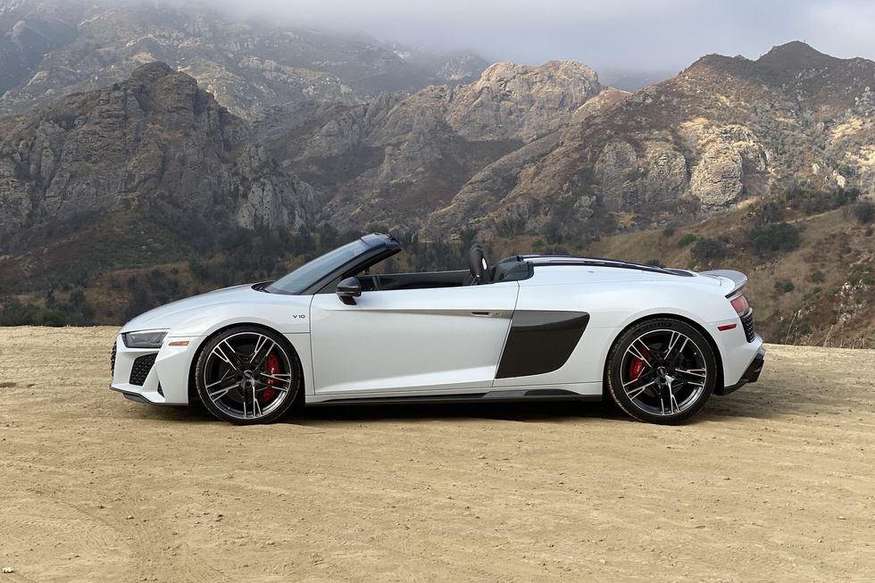
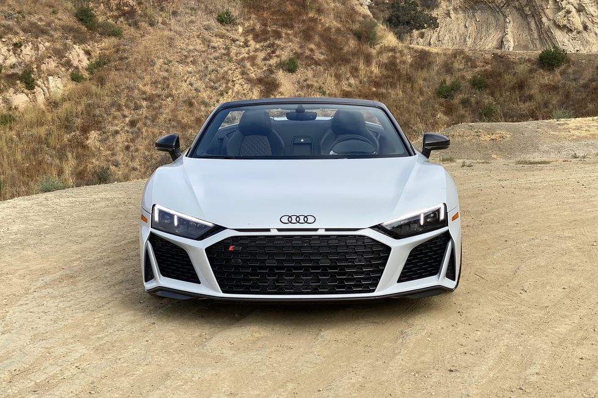
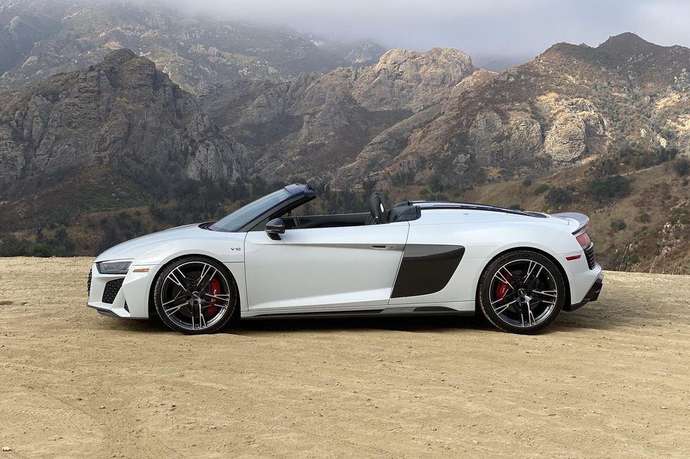
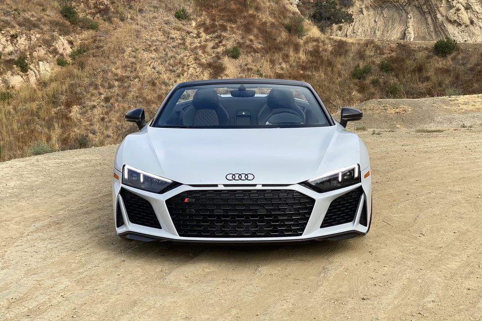

AUDI | R8 SPIDER 2020
FIND YOUR NEXT CAR AT AUTO4SALE GARAGE AT GLENVISTA
The V10 naturally aspirated engine, positioned between the axles, is at the heart of the Audi R8. In the performance version, this engine delivers 449kW. This results in the sprint to reach to 100 km/h in just 3.1 seconds and increases the top speed to 331 km/h, while 560 Nm of torque is available at 6500 rpm.
The spoiler on the rear of the Audi R8 Coupé V10 performance quattro is a fixed, clear external sign of this impressive performance of the unit.
In addition to performance, racing is always about how precisely and how directly you can replicate it on the road. The chassis delivers a key part of the answer: dual aluminium wishbone axles guide all four wheels, while the Audi R8 Coupé V10 performance quattro features springs and dampers that are set up to be even tighter. With Audi magnetic ride, there is the option of having a damping system adapts the way the shock absorbers work to suit your driving style and the profile of the road – making changes every millisecond for each individual wheel.
The re-tuned steering assistance passes on your steering even more directly and ensures exceptionally accurate feedback from the road. The optional dynamic steering adjusts the steering angle depending on your speed, thereby ensuring extremely agile handling. The standard carbon-fibre-reinforced ceramic brakes on the Audi R8 Coupé V10 performance quattro serve to reduce momentum.
 


